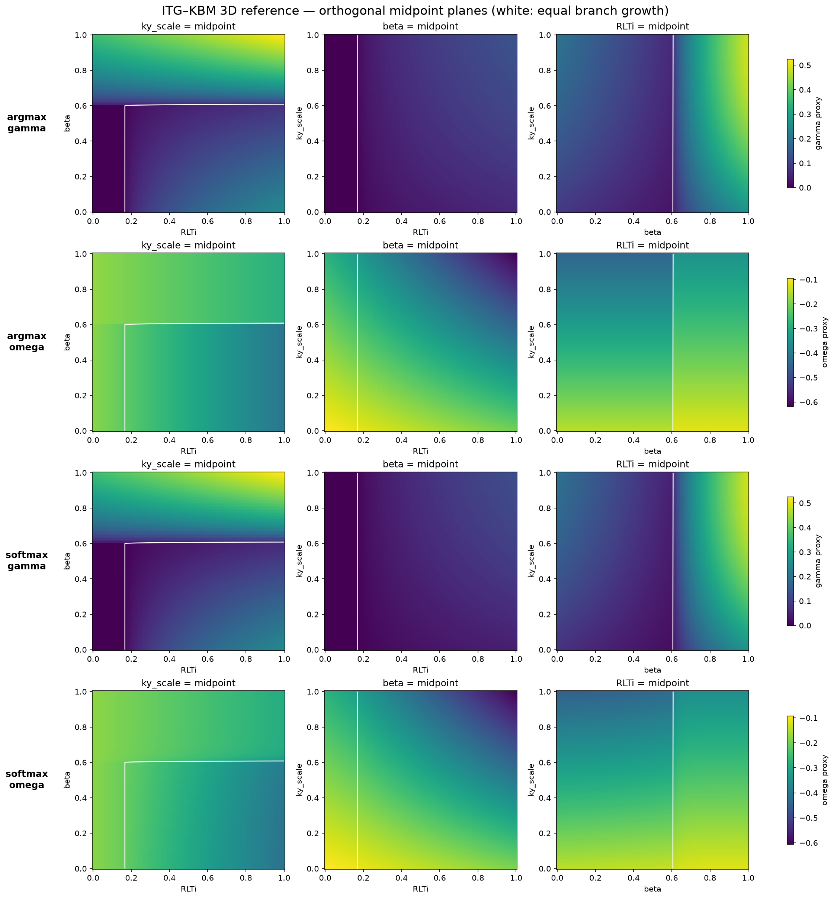
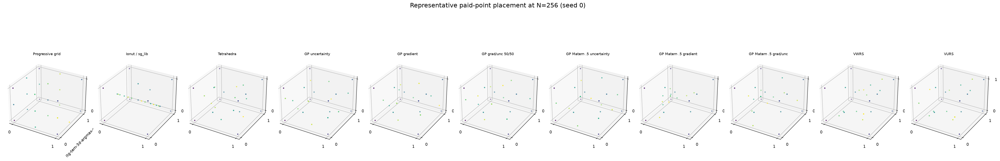
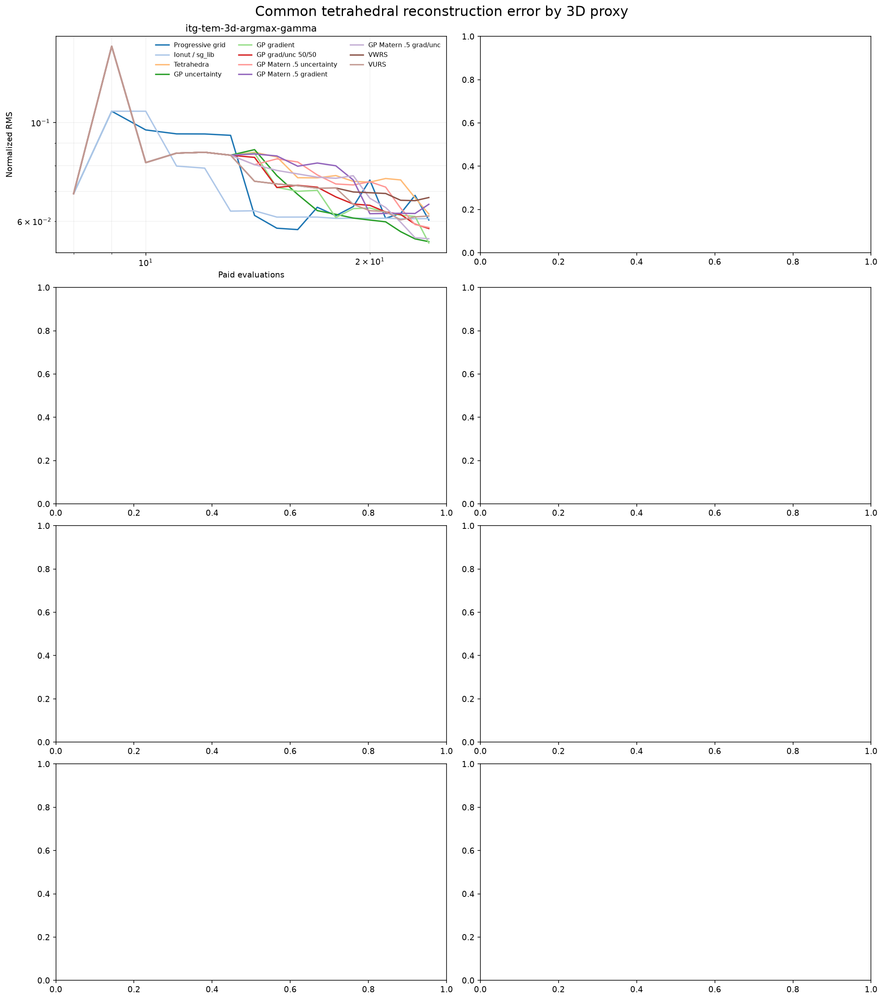
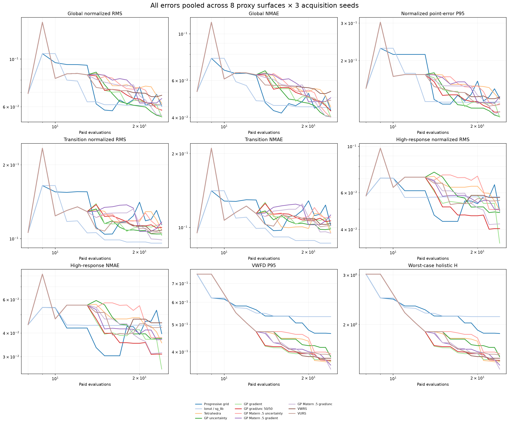
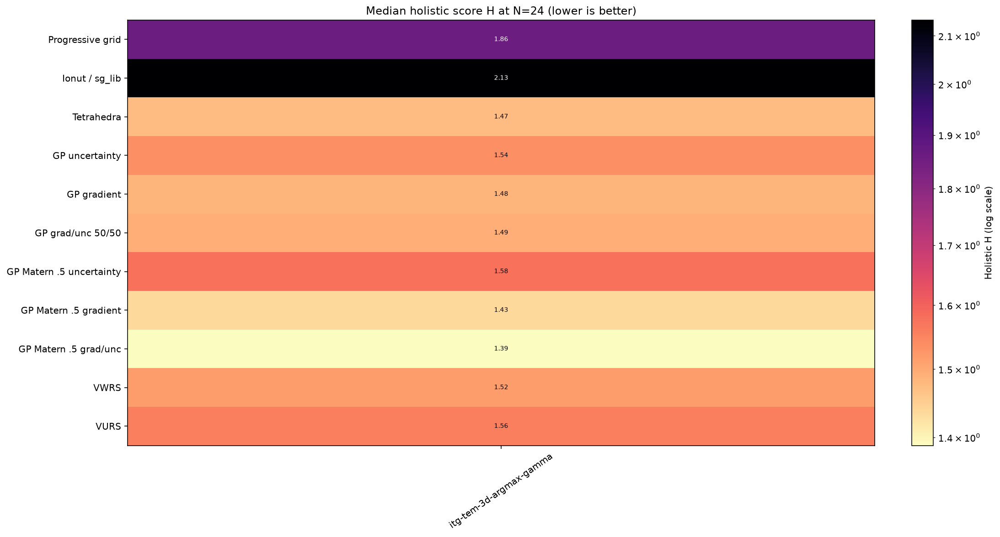

ITG–TEM references

All methods share the same paid-point budgets, frozen reference points, and common piecewise-linear tetrahedral reconstruction. Native GP errors remain secondary diagnostics. Curves are medians across three acquisition seeds.





sgpp: unavailable — ImportError: pysgpp is not installed. `pip install pysgpp`, or build SG++ with the Python bindings. The manifold and the scoring harness run without it; only this arm needs it.